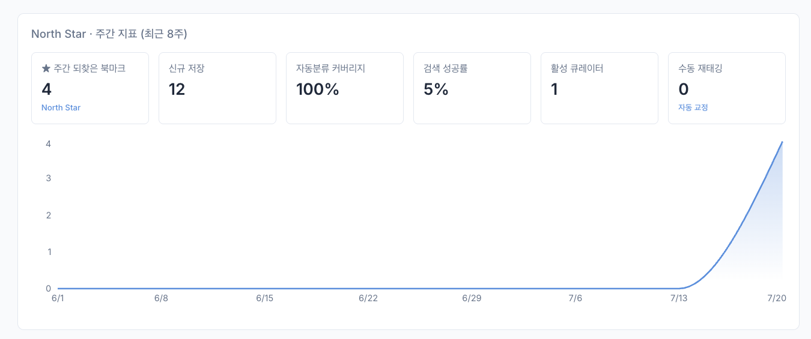
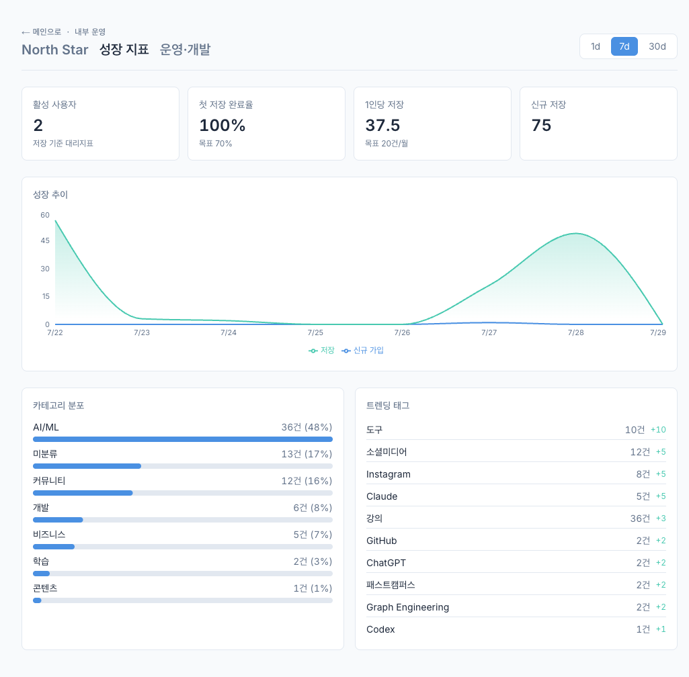

01 문제
크고 아프다
84% · 병목은 재발견
저장이 아니라, 되찾기를 푼다.
안녕하세요, AI 캠프 7기 2팀입니다. 북마크 AI 관리 서비스, 모와바입니다. 결론부터 말씀드리고 근거를 뒤에 붙이겠습니다. 북마크 — 나중에 다시 보려고 웹페이지 주소를 저장해두는 기능 되찾기(재발견) — 예전에 저장해둔 자료를 필요할 때 다시 찾아내는 일
먼저 결론입니다. 다시 보려고 저장한 북마크의 84%는 정작 되찾을 때 쓰이지 않습니다. 폴더에 정리해둬도 그걸로 찾아낸 건 4%뿐입니다. 저희는 저장하는 순간 자동으로 분류하고 말하듯 검색하게 만들어 이 문제를 풀었고, 느낌이 아니라 실측으로 증명했습니다. 태깅 F1 0.79, 핵심 구간 검색 재현율 95.7%. 이 세 칸이 오늘 발표의 전부이고, 나머지는 이 셋의 근거입니다. 실측 — 느낌이나 추정이 아니라 실제로 돌려서 잰 숫자 F1 — 검색·분류 품질을 한 숫자로 합친 종합 점수. 1이 만점 재현율(recall) — 찾아냈어야 할 것 중 실제로 찾아낸 비율. 놓침이 적을수록 높다 골든셋 — 정답을 사람이 직접 붙여둔 시험지. 채점 기준이 된다 회귀 게이트 — 점수가 예전보다 떨어지면 코드 합치기를 자동으로 막는 관문
"자동 태깅 + 자연어 검색이 재발견 행동을 늘린다."
검색 사용률이 MAU의 40%를 넘으면 Go, 못 넘으면 접습니다.
판단에 필요한 건 여기까지 · 이후 슬라이드는 앞 세 칸의 근거
그래서 요청도 먼저 드리겠습니다. 저희가 검증하려는 가설은 하나입니다. '자동 태깅과 자연어 검색이 재발견 행동을 늘린다.' 검색 사용률이 MAU의 40%를 넘으면 Go, 못 넘으면 접습니다. 판단에 필요한 정보는 여기까지고, 이후는 의심되는 부분만 보시면 되는 근거입니다. MVP — 가설 하나를 확인할 수 있는 최소한의 제품 (Minimum Viable Product) 가설 — 맞는지 아직 모르지만 확인해보려는 주장 MAU — 한 달에 한 번이라도 쓴 사용자 수 (Monthly Active Users) Go / No-Go — 계속 갈지 접을지, 미리 정해둔 판정 기준
근거는 넷입니다. 문제가 크고, 제품이 작동하고, 그게 실측으로 증명됐고, 지금이 타이밍입니다. 차례로 보여드리겠습니다. 근거 — 앞의 결론을 믿어도 되는 이유. 뒤 슬라이드가 하나씩 맡는다 타이밍 — 이 제품을 지금 내야 하는 시장 상황
북마크로 다시 찾아낸 건 16%. 폴더 메뉴를 뒤져 찾아낸 건 4%뿐.
Bergman, Whittaker & Schooler (2021) · J. Librarianship & Information Science 53(2) · 북마크 타깃 250건(참여자 50명 × 5건)
첫째, 문제. 참여자 50명에게 각자 자기 북마크에서 뽑은 타깃 5개씩, 총 250건을 다시 찾아보게 했더니 북마크 기능을 써서 찾아낸 건 41건, 16%뿐이었습니다. 그나마 32건은 상단바에 늘 보이던 것이었고, 폴더 메뉴를 열어 의도적으로 찾아낸 건 9건, 4%뿐입니다. 저자들 결론은 더 셉니다 — 북마크해둔 사이트가 북마크 안 한 사이트보다 더 잘 찾아지지도 않았습니다. 폴더에 정리하는 행위 자체가 되찾기에 기여를 못 합니다. 84% — 저장해둔 북마크를 다시 찾을 때 정작 북마크 기능을 쓰지 않은 비율. '끝내 못 찾았다'는 뜻이 아니라 '검색·주소 입력 등 다른 방법으로 찾았다'는 뜻 n=250 — 참여자 50명 × 1인당 자기 북마크 5건 = 250건. 사람 수가 아니라 북마크 건수 재발견(re-finding) — 예전에 저장하거나 방문한 것을 나중에 다시 찾아내는 일
왜 못 찾을까요. 저장 시점엔 제목만 남고 내용은 사라집니다. 분류는 매번 폴더를 골라야 해서 방치되고요. 결국 재발견 단계에선 키워드 검색조차 안 됩니다. 병목은 세 번째 단계입니다. 병목 — 전체 흐름의 속도를 결정해버리는, 가장 막히는 구간 인지 부하 — 뭘 고를지 판단하느라 머리를 쓰는 정도. 높으면 귀찮아서 결국 안 하게 된다
"분명 저장했는데, 어디 뒀는지 기억이 안 나."
개발자 · PM · 리서처 — 하루 10개씩 저장하는 지식노동자.
폴더 정리는 부담, 결국 방치 · 저장한 자료를 필요할 때 바로 되찾고 싶다
이 문제를 가장 아프게 겪는 사람은 하루에도 열 개씩 저장하는 지식노동자입니다. 개발자, PM, 리서처 — '분명 저장했는데 어디 뒀는지 기억이 안 나'는 경험, 다들 있으실 겁니다. 지식노동자 — 자료를 찾고 읽고 정리하는 일이 업무의 중심인 사람 PM — 프로덕트 매니저. 무엇을 만들지 정하고 팀을 조율하는 사람 리서처 — 자료 조사·분석을 전문으로 하는 사람
둘째, 제품. 사용자는 1클릭으로 저장만 하면 되고, 분류는 AI가, 검색은 말하듯 하면 됩니다. 뒤의 두 기능이 핵심입니다. 태깅 — 자료에 꼬리표(키워드)를 붙여두는 것. 나중에 그 꼬리표로 묶어 찾는다 자동 태깅 — 사람이 고르지 않고 AI가 내용을 읽어 꼬리표를 대신 붙여주는 것
본문을 읽어 대·중·소 최대 3개를 뽑는다
대분류는 카테고리로, 나머지가 태그로. 폴더 수동 정리를 아예 없앤다.
13개 대분류 · 중분류는 닫힌 enum으로 환각 차단 · confidence 0.6 미만 자동 제외 · 본문은 처리 후 즉시 파기
저장하면 AI가 본문 앞 2,000자를 읽고 대·중·소 최대 세 개를 뽑습니다. 대분류가 카테고리로 빠지고 나머지가 태그로 남습니다. 13개 대분류 체계에, 중분류는 닫힌 목록으로 강제해서 환각 태그를 차단했습니다. 확신도 0.6 미만이면 아예 붙이지 않습니다 — 틀린 태그보다 빈 태그가 낫다고 봤습니다. 본문은 처리 즉시 파기합니다. 대·중·소 분류 — 넓은 갈래(대) → 중간 갈래(중) → 구체적 주제(소)로 좁혀가는 3단계 분류 카테고리 / 태그 — 카테고리는 폴더처럼 하나만 붙는 큰 갈래, 태그는 여러 개 붙일 수 있는 꼬리표 enum(닫힌 목록) — 미리 정해둔 값 중에서만 고르게 막아두는 것. 새 값을 못 만든다 환각(hallucination) — AI가 실제로 없는 것을 그럴듯하게 지어내는 현상 confidence(확신도) — AI가 자기 답을 얼마나 믿는지 0~1 사이 점수로 매긴 값. 0.6이면 60% 파기 — 저장하지 않고 그 자리에서 버리는 것. 서버에 남기지 않는다
"그 리액트 훅 글"로 찾아낸다
군더더기('그')는 걷어내고, '리액트'를 'React'까지 넓혀 영문 제목 문서도 잡는다.
하이브리드 검색(pgvector + 트라이그램 · RRF 병합) · 임베딩 3-large · 브랜드 음차↔원어 사전 확장 · 조사 붙은 토큰도 인식
'그 리액트 훅 글'이라고 넣으면 '그' 같은 군더더기는 걷어내고, '리액트'를 'React'까지 넓혀서 찾습니다. 제목이 영문이어도 잡힌다는 뜻입니다. 임베딩 모델이 음차 표기와 원어를 잘 연결하지 못하는데, 실측해보니 검증 가능한 31개 브랜드 중 16개가 한글로만 검색하면 상위 10위 안에 못 들어왔습니다. 그래서 사전으로 원어까지 확장합니다. '피그마로 배우는'처럼 조사가 붙어도 인식합니다. 벡터와 키워드 검색을 함께 돌려 합치는 하이브리드고요. 한 가지 미리 말씀드리면 '지난달' 같은 시간 표현은 날짜 필터로 동작하지 않습니다. 사람이 기억하는 '지난달'은 실제 달력 월과 자주 어긋나는데, 하드 필터로 걸면 맞는 답을 오히려 배제합니다. 못 찾는 실패는 되돌릴 수 없으니 정밀도보다 재현율을 지키는 쪽을 택했습니다. 자연어 검색 — 검색어를 정해진 형식이 아니라 평소 말하듯 넣어도 되는 검색 임베딩 — 문장의 '뜻'을 숫자 목록으로 바꾼 것. 뜻이 가까우면 숫자도 가까워진다 벡터 검색(pgvector) — 그 숫자 사이 거리로 뜻이 비슷한 문서를 찾는 방식. 단어가 달라도 잡힌다 트라이그램 — 글자를 세 개씩 잘라 겹치는 정도로 비슷한 단어를 찾는 방식. 오타에 강하다 하이브리드 검색 — 뜻으로 찾기와 글자로 찾기를 함께 돌려 결과를 합치는 방식 RRF — 서로 다른 두 검색 순위표를 한 줄로 공정하게 합치는 계산법 음차 — 외국어 발음을 한글로 옮겨 적은 표기. '리액트' ↔ React 조사 — '~로', '~의' 같은 한국어 토씨. 붙으면 단어가 달라 보여 검색이 어긋난다 하드 필터 — 조건에 안 맞으면 무조건 잘라내는 방식. 잘못 걸면 맞는 답까지 사라진다 재현율(recall) — 찾아냈어야 할 것 중 실제로 찾아낸 비율. 놓침이 적을수록 높다 정밀도(precision) — 찾아온 것 중 진짜 맞는 것의 비율. 헛것이 적을수록 높다
태깅 macro-F1 0.79 · 대분류 0.87 · 골든셋 n=215 실측 · 검색 recall 코어 0.957 / 전체 0.8125 (n=32) · 품질 퇴행 방지 게이트로 회귀 차단
셋째, 증명. 정답을 직접 라벨링한 골든셋 215건으로 채점한 태깅 F1이 0.79, 대분류 정확도 87%입니다. 검색은 32개 질의 중 핵심 구간 재현율 95.7%, 전체 81.3%입니다. 전체가 낮은 건 아직 못 푸는 교차언어 개념어를 일부러 골든셋에 넣어 계측 중이기 때문입니다. 이 수치가 떨어지면 머지가 차단되는 회귀 게이트를 걸어놨습니다. 골든셋 — 정답을 사람이 직접 붙여둔 시험지. 채점의 기준이 된다 라벨링 — 그 정답을 하나하나 손으로 달아주는 작업 F1 — 정밀도와 재현율을 한 숫자로 합친 종합 점수. 1이 만점 macro — 태그별 점수를 개수와 무관하게 똑같은 비중으로 평균낸 것. 드문 태그도 봐준다 교차언어 — 한국어로 물었는데 답이 영어 문서에 있는 경우처럼 언어가 엇갈리는 상황 회귀(regression) — 잘 되던 게 코드 변경 뒤 도로 나빠지는 것 머지 — 작업한 코드를 본 줄기에 합치는 것
미분류 4건을 전부 회수했는데 전체 F1은 오히려 내려갔다 · 그래서 버렸다. 이런 기각이 오늘만 2건.
화면의 두 숫자가 오늘 있었던 일입니다. 개선이라고 생각한 걸 넣었더니 0.789가 0.773으로 내려갔고, 그래서 버렸습니다. 이런 기각이 오늘만 두 건입니다. 어떻게 알아챘는지 말씀드리겠습니다 — 세 가지를 고정했습니다. 첫째 측정 — 215건 정답지를 본문이 있을 때와 제목만 있을 때로 따로 채점합니다. 임포트에서 메타 조회가 실패하는 경우가 실사용에 흔한데, 잘 되는 조건만 재면 그 실패가 안 보이기 때문입니다. 둘째 게이트 — 같은 코드로 세 번 돌려도 F1이 0.768, 0.755, 0.7595로 출렁입니다. LLM이라 그렇습니다. 그래서 임계값을 이 출렁임 밴드 아래에 뒀습니다. 밴드 한복판에 두면 품질이 그대로여도 절반 확률로 실패하는 동전던지기가 됩니다. 셋째 분리 측정 — 변경이 두 개면 하나씩 되돌려가며 따로 잽니다. 실제로 프롬프트와 태그 사전을 같이 바꿨는데, 사전만 되돌려 재보니 예상과 반대였습니다. 사전은 올렸고 프롬프트가 내렸습니다. 안 나눴으면 잘못된 쪽을 버렸을 겁니다. 그래서 오늘 개선안 두 건을 실측으로 기각했습니다. 로그인 페이지가 미분류로 떨어지는 문제를 고치려 예제를 추가했더니 4건 다 회수됐는데, 전체 F1은 0.789에서 0.773으로 떨어졌습니다. 새 예제가 특정 태그 가중을 키워 다른 태그를 잠식하고 있었습니다. 버리고, 예제를 늘리는 대신 기존 예제의 URL만 바꾸는 방식으로 다시 만들어 대분류 정확도를 0.874까지 올리고 미분류율을 절반으로 줄였습니다. 개선했다는 말은 누구나 할 수 있습니다. 저희는 개선한 줄 알았다가 실측이 아니라고 해서 버린 기록을 문서로 남깁니다. 실측 — 느낌이나 추정이 아니라 실제로 돌려서 잰 숫자 비결정성 — 같은 걸 넣어도 AI 답이 매번 조금씩 달라지는 성질 밴드(±0.013) — 그 흔들림이 오르내리는 폭. 이 폭 안의 차이는 개선인지 우연인지 구분이 안 된다 임계값 — 통과와 탈락을 가르는 기준선 분리 측정(ablation) — 한꺼번에 바꾼 것을 하나씩 되돌려가며 어느 쪽이 효과였는지 가려내는 방법 미분류 — 카테고리를 못 붙이고 빈칸으로 넘어간 상태 프롬프트 — AI에게 어떻게 일하라고 적어주는 지시문


그래프마다 답하는 질문은 하나씩 — 추이는 "얼마나", 유저 분해는 "누가", 비용 분리는 "원가 주장 검증" · 개발 단계는 골든셋 회귀 게이트(F1 ≥ 0.74)가 자동 차단 — 실화면
검증은 일회성이 아닙니다. 실제 운영 중인 어드민 대시보드인데, 각 지표를 왜 보는지가 핵심입니다. 첫째, 되찾기 퍼널과 유저별 분해 — 가설 자체가 "자동 태깅과 자연어 검색이 재발견을 늘린다"입니다. 저장은 이미 잘 됩니다. 되찾기가 안 늘면 이 제품은 실패이고, Go/No-Go 기준인 검색 사용률 40%가 이 지표에서 나옵니다. 둘째, 성장 추이 — 되찾기의 분모입니다. 쌓이는 게 없으면 되찾을 것도 없으니 저장·가입이 유지되는지 함께 봅니다. 셋째, 비용 분리 — 유저당 원가 2센트는 사업성 주장의 전제인데, 청구액엔 개발·평가 비용이 섞여 있어 그대로 보면 140배 왜곡됩니다. 실사용분만 분리해 계속 검증합니다. 어드민 — 사용자에겐 안 보이고 운영자만 들어가는 관리 화면 North Star 지표 — 이 제품이 잘 되고 있는지 한 줄로 답하는 대표 지표 퍼널 — 저장 → 분류 → 검색 → 클릭처럼 단계마다 몇 명이 남는지 보는 깔때기 덤벨 차트 — 두 시점을 점 두 개와 선으로 이어 변화 폭을 보여주는 그래프 분모 — 비율을 잴 때 아래에 놓이는 전체 수. 쌓인 게 없으면 되찾기 비율도 못 잰다 Go/No-Go — 계속 갈지 접을지, 미리 정해둔 판정 기준 MAU — 한 달에 한 번이라도 쓴 사용자 수 (Monthly Active Users)
2025-07 Pocket 서비스 종료
무료 · AI · 자연어 검색을 모두 갖춘 국내 서비스는 지금 없다.
난민 시장을 임포트 원클릭으로 선점 · 최근접 경쟁 mymind는 자연어 검색이 아직 베타
넷째, 타이밍. 작년 7월 Pocket이 종료되면서 갈 곳 잃은 사용자들이 생겼는데, 무료에 AI 자동 분류, 자연어 검색까지 갖춘 국내 서비스는 아직 없습니다. 원클릭 임포트로 이 공백을 선점합니다. Pocket — '나중에 읽기'로 유명했던 북마크 서비스. 2025년 7월 종료됐다 mymind — AI로 자동 정리해주는 해외 북마크 서비스. 우리와 가장 가까운 경쟁 제품 임포트 — 다른 서비스에 쌓아둔 데이터를 통째로 옮겨오는 것 베타 — 정식 출시 전, 일부에게만 열어둔 시험 단계 선점 — 경쟁자보다 먼저 그 자리를 차지하는 것
AI 변동비가 사실상 0 → 가격 하한 제약 없음
Freemium으로 시작해 프리미엄 전환.
Free / Pro ₩5,900월 · 원가 무관, 얼마나 되찾게 해주는가로 설계
비용 걱정은 없습니다. AI 원가는 유저당 월 2센트 — 사실상 0입니다. 가격 하한 제약이 없으니 Freemium으로 시작해서, 얼마나 잘 되찾게 해주는가라는 가치 기준으로 프리미엄 전환을 설계합니다. 원가 — 사용자 한 명을 굴리는 데 우리가 실제로 쓰는 돈 변동비 — 사용자가 늘어난 만큼 같이 늘어나는 비용. 여기선 AI 호출 비용 가격 하한 — 원가 때문에 그 아래로는 못 내리는 최저 가격선 Freemium — 기본 기능은 무료로 열어두고, 더 쓰려면 돈을 받는 방식
84% 미사용 → 자동 태깅 + 자연어 검색 → F1 0.79 · recall 0.957
검색 사용률 MAU 40% 돌파 여부로 판정하겠습니다.
모와바 · Save it · Find it
정리하겠습니다. 저장해두고도 84%는 안 쓰이는 문제를, 자동 태깅과 자연어 검색으로 풀었고, F1 0.79와 재현율 95.7%로 증명했습니다. 검색 사용률 40% 돌파 여부로 판정하겠습니다. 모와바 — 저장하는 도구가 아니라, 다시 찾는 도구로. 감사합니다. F1 0.79 — 자동 분류 품질 종합 점수. 1이 만점 재현율 95.7% — 찾아냈어야 할 것 중 실제로 찾아낸 비율 MAU 40% — 한 달에 한 번이라도 쓴 사용자 중 검색까지 쓴 비율이 40%